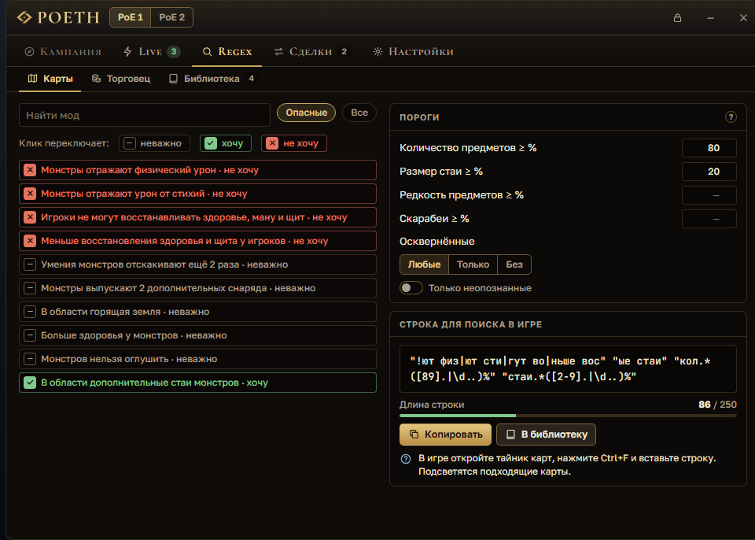
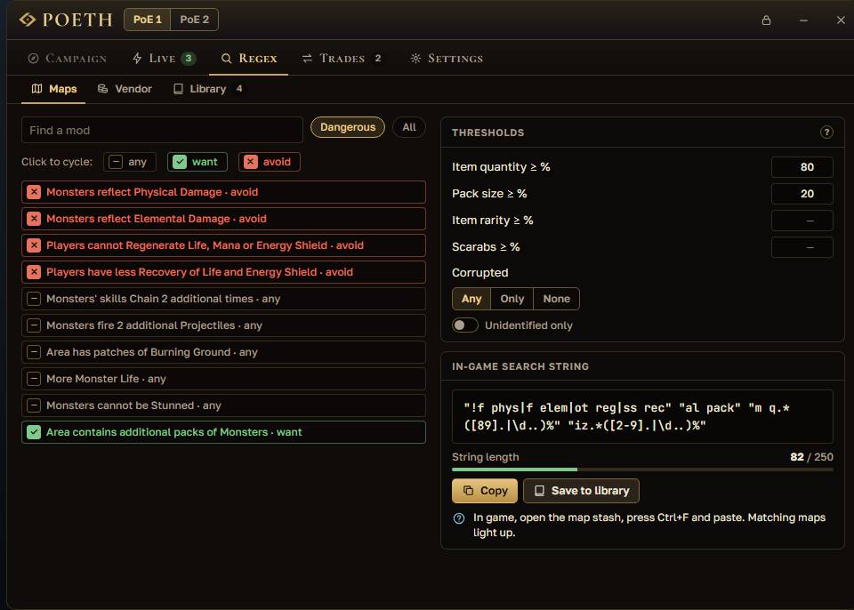

Сейчас доступна демо-версия для знакомства: могут быть ошибки. Полноценный релиз — 11 ноября, установленная версия обновится до него сама. Portable-версию нужно будет скачать заново.A demo version is available now so you can try POETH: expect some bugs. The full release is on November 11, and the installed version updates to it by itself. The portable version will need to be downloaded again.
Гайд по POETHPOETH guide
Как пользоваться POETHHow to use POETH
Все функции приложения по шагам: что это, где найти и как пользоваться. Выберите функцию в оглавлении или начните с раздела «С чего начать».Every feature of the app step by step: what it is, where to find it and how to use it. Pick a feature in the contents or start with “Getting started”.
Картинки — макеты интерфейса и схемы: скриншоты из игры появятся позже. Ответы на частые проблемы — в списке вопросов.Pictures are interface mockups and diagrams; in-game screenshots will come later. Common problems are answered in the FAQ.
ОглавлениеContents
С чего начатьGetting started
Как установить POETH — на главной странице. Здесь — что сделать после первого запуска.How to install POETH is on the main page. Here is what to do after the first launch.
Окно игры. В настройках графики Path of Exile выберите режим «Окно без рамки» или «Окно». В полноэкранном режиме окна POETH не видны. Игру не запускайте от имени администратора.Game window. In the Path of Exile graphics settings, choose Windowed Fullscreen or Windowed. In exclusive fullscreen POETH windows are not visible. Do not run the game as administrator.
Мастер первого запуска. Он спросит язык интерфейса и игру, язык клиента игры и сайт трейда (www или ru), покажет главные клавиши и предложит войти в аккаунт — это по желанию. Пройти мастер снова: «Настройки» → «Мастер первого запуска».First-run wizard. It asks for the interface language and the game, the game client language and the trade site (www or ru), shows the main keys and offers an account sign-in — that one is optional. To run it again: Settings → “First-run wizard”.
Окно POETH. Слева — рельс с вкладками по разделам «Торговля», «Фарм» и «Прокачка». В шапке — переключатель PoE 1 / PoE 2, замок (сквозной режим), шестерёнка (настройки), «Свернуть» и «Скрыть окно». Вернуть окно: Ctrl+Shift+O или клик по значку POETH в трее.The POETH window. On the left is the rail with tabs grouped into Trade, Farming and Levelling. The header has the PoE 1 / PoE 2 switch, the lock (click-through), the gear (settings), Minimize and Hide window. To bring the window back: Ctrl+Shift+O or a click on the POETH tray icon.
Главная клавиша — Ctrl+D. Наведите курсор на предмет в игре и нажмите её: рядом появится окно цены. Остальные клавиши — в таблице ниже, их можно поменять в настройках.The main key is Ctrl+D. Hover an item in the game and press it: the price window opens next to it. The other keys are in the table below; you can change them in the settings.
Кнопки поверх игры. Кнопки в окнах POETH поверх игры (карточки сделок, уведомления live) нажимаются мышью сразу, после клика управление возвращается игре. Чтобы поработать в оверлее дольше, нажмите Shift+Space; назад в игру — Esc, клик по пустому месту или ещё раз Shift+Space.Buttons over the game. Buttons in POETH windows over the game (trade cards, live alerts) can be clicked right away; after the click, control goes back to the game. To work in the overlay for longer, press Shift+Space; back to the game: Esc, a click on empty space, or Shift+Space again.
Схема окна POETH для PoE 1: вкладки рельса ведут к разделам этого гайда. В PoE 2 на рельсе только «Прайс-чек» и «Кампания».Diagram of the POETH window for PoE 1: the rail tabs link to the sections of this guide. In PoE 2 the rail has only Price Check and Campaign.
Клавиши по умолчаниюDefault keys
Цена предмета под курсоромPrice of the item under the cursor
Ctrl+D
Включить оверлей, чтобы нажимать в нём кнопкиTurn on the overlay to click its buttons
Shift+Space
Трейд-окноTrade window
Ctrl+Shift+T
Показать или спрятать окно POETHShow or hide the POETH window
Ctrl+Shift+O
Сквозной режим: все клики идут в игруClick-through: all clicks go to the game
Ctrl+Shift+L
Сделка: пригласить / обмен / закрыть карточкуTrade: invite / trade / close the card
Alt+1 / 2 / 3
В убежище (/hideout)Go to hideout (/hideout)
F5
«Обмен»: считать таблицу «Рыночный курс» (бета)Exchange: read the “Market Ratio” table (beta)
Alt+D
Гид прокачки: показать или свернутьLeveling guide: show or collapse
Ctrl+Shift+G
PoE 2: шаг кампании назад / вперёдPoE 2: campaign step back / forward
Ctrl+Shift+[ / ]
Клавиши «в игре» работают, только когда активно окно игры. Поменять — в настройках.In-game keys work only while the game window is active. Change them in the settings.
Цена предмета по Ctrl+DItem price with Ctrl+D
PoE 1без входаno sign-in
Наведите курсор на предмет в игре и нажмите Ctrl+D — рядом появится окно с ценой и подсказкой, что делать с вещью. Работает с русским и английским клиентом. Как это устроено в PoE 2 — в своём разделе.Hover an item in the game and press Ctrl+D — a window with the price and a hint on what to do with the item opens next to it. Works with the English and Russian clients. For PoE 2, see its own section.
Как пользоватьсяHow to use it
Наведите курсор на предмет и нажмите Ctrl+D. POETH скопирует предмет и вернёт в буфер обмена то, что там было.Hover an item and press Ctrl+D. POETH copies the item and puts back whatever was in your clipboard.
Вердикт подскажет, что делать: «Хлам — продайте торговцу в городе», «Дешёвка — копите и продавайте пачкой», «Выставьте за ~X», «Ценная вещь — внимательно проверьте свойства», «Мало данных — цена примерная» или «Таких никто не продаёт». Жёлтые строки предупреждают, если похожие лоты — другой вариант предмета.The verdict tells you what to do: junk to sell to a vendor in town, cheap stuff to save up and sell in bulk, “List it for ~X”, a valuable item to check carefully, “Not enough data — the price is rough”, or “Nobody is selling one like this”. Yellow lines warn you when similar listings are a different variant of the item.
«Скопировать заметку цены» копирует ~price X chaos. В игре: правый клик по предмету в премиум-вкладке тайника и Ctrl+V — предмет выставлен на продажу.“Copy price note” copies ~price X chaos. In the game, right-click the item in a premium stash tab and press Ctrl+V — the item is now listed for sale.
Свойства с галочками. Ценные для покупателя свойства (жизнь, сопротивления, скорость…) уже отмечены, редкие ищутся по той же базе. Поменяйте галочки и нажмите «Искать заново» или Enter.Checked mods. Mods that buyers care about (life, resistances, speed…) are already checked, and rares are searched on the same base. Change the checkboxes and press “Search again” or Enter.
«Цена на рынке» — по самым дешёвым похожим лотам, без приманок; ниже — «Предложения», сначала дешёвые. Если важные свойства не отмечены, будет «Цена может быть выше: не отмечены …» и кнопка «Учесть и искать заново».“Market price” is based on the cheapest similar listings, without bait; below it are the listings, cheapest first. If important mods are unchecked, you'll see “The price may be higher: not checked …” with an “Include and search again” button.
Валюта и всё, что меняют у Фаустуса, оценивается по почасовым данным биржи GGG: «Цена у Фаустуса», рынки «за chaos» и «за divine». Объявления сайта (часто устаревшие) загружаются по кнопке.Currency and anything traded at Faustus is priced from GGG's hourly exchange data: the price at Faustus, “for chaos” and “for divine” markets. Trade-site listings (often stale) load only when you click.
У лота «Лично» — «Написать»: сообщение продавцу вставится в чат игры, Enter нажимаете вы. У лота «Выкуп» — «Открыть лот»: в трейд-окне нажмите на сайте «Travel to Hideout» и купите предмет у торговца в убежище продавца (комиссия в золоте). Наведите курсор на лот — сбоку появится предмет продавца и «похоже N/M».“In person” listings have “Whisper”: the message to the seller is pasted into game chat, and you press Enter. “Buyout” listings have “Open listing”: in the trade window click “Travel to Hideout” on the site and buy from the merchant in the seller's hideout (gold fee). Hover a listing to see the seller's item and “similar N/M”.
Внизу окна: «Открыть в трейд-окне», «В избранное» и «Следить (live)». В шапке — курс «1 div = N c», лига и «Обновить».At the bottom: “Open in trade window”, “Save” (to favorites) and “Live search”. The header shows the “1 div = N c” rate, the league and Refresh.
Закрыть окно: Esc, клик мимо, × или ещё раз Ctrl+D. Окно можно перетащить за шапку — следующий Ctrl+D откроет его там же.To close the window: Esc, a click outside, × or Ctrl+D again. You can drag the window by its header — the next Ctrl+D opens it in the same spot.
КлавишаKey
Ctrl+Dнад предметом в игреover an item in the game
ГдеWhere
окно поверх игры, у курсораa window over the game, at the cursor
Что нужноNeeds
игра в режиме «Окно» или «Окно без рамки»the game in Windowed or Windowed Fullscreen
«Таких никто не продаёт» — что делать?“Nobody is selling one like this” — now what?
Это не значит, что предмет ничего не стоит. Снимите галочки с части свойств и нажмите «Искать заново» или «Ослабить на 10%» — диапазоны расширятся, и поиск повторится.
It does not mean the item is worthless. Uncheck some mods and press “Search again”, or “Loosen by 10%” — the ranges widen and the search runs again.
«Сайт трейда просит подождать»“The trade site asks us to wait”
Это защита сайта от частых запросов, аккаунту ничего не грозит: POETH повторит сам. Повторный Ctrl+D по тому же предмету 5 минут берёт результат из кэша и лимит не тратит.
This is the site protecting itself from frequent requests; your account is not at risk, and POETH retries by itself. Pressing Ctrl+D on the same item within 5 minutes uses the cached result and does not spend the limit.
Чем отличается экспертный режим?What does expert mode change?
Появляются пресеты «Обычный», «Точный», «База», «Оптом», колонки «Тир / Ролл / min / max» и компактный вердикт в одну строку. Подсказки «почему такая цена» прячутся.
You get the Normal / Exact / Base / Bulk presets, “Tier / Roll / min / max” columns and a one-line verdict. The “why this price” hints are hidden.
Окно не появляетсяThe window does not appear
Проверьте режим окна игры, права администратора и не занят ли Ctrl+D другой программой — по шагам в частых вопросах.
Check the game's window mode, administrator rights and whether another program uses Ctrl+D — step by step in the FAQ.
Официальный сайт трейда в отдельном окне, а слева — ваше избранное с папками. Если игра запущена, окно открывается поверх неё, а Esc прячет его и возвращает вас в игру.The official trade site in its own window, with your favorites and folders on the left. If the game is running, the window opens over it, and Esc hides it and returns you to the game.
Как пользоватьсяHow to use it
Нажмите Ctrl+Shift+T (ещё раз — спрятать) или «Открыть в трейд-окне» в окне цены.Press Ctrl+Shift+T (again to hide it) or “Open in trade window” in the price window.
Справа — сайт pathofexile.com как есть: ищите, как в браузере. Войти можно кнопкой «Войти» внизу слева: пароль вводится только на странице сайта.On the right is pathofexile.com as is: search like you would in a browser. Sign in with the “Sign in” button at the bottom left: you type the password only on the site's page.
Нашли нужное — нажмите «Сохранить текущий поиск», дайте название, выберите папку и нажмите «Сохранить».Found what you need? Click “Save current search”, give it a name, pick a folder and click Save.
Клик по названию открывает поиск справа. Поиски и папки перетаскиваются мышью; в меню «Ещё» — переименовать, заметка, перенести в папку, в архив, удалить. «Найти в избранном» ищет по названию, заметке и лиге.Click a name to open that search on the right. Drag searches and folders with the mouse; the “More” menu has rename, note, move to folder, archive and delete. “Search favorites” looks through names, notes and leagues.
Молния у поиска включает для него live search.The lightning bolt next to a search turns on live search for it.
Better Trading: «Импорт» — вставьте строки вида 3:…, каждая станет папкой, и нажмите «Импортировать». «Экспорт» копирует ваши папки строками в буфер обмена.Better Trading: Import — paste lines like 3:… (each becomes a folder) and click “Import”. Export copies your folders as lines to the clipboard.
КлавишаKey
Ctrl+Shift+T
Что нужноNeeds
вход на сайте — по желанию, нужен для live searcha sign-in on the site is optional; live search needs it
Кнопки сайта «Travel to Hideout» и «Direct whisper» нажимаете вы сами: POETH за вас на сайте ничего не нажимает.You click the site's own “Travel to Hideout” and “Direct whisper” buttons yourself: POETH never clicks anything on the site for you.
«Переход заблокирован» или «Ссылка открыта в браузере»“Navigation blocked” or “Link opened in your browser”
В трейд-окне открывается только pathofexile.com (и страница входа). Ссылки на другие сайты открываются в вашем обычном браузере.
The trade window opens only pathofexile.com (and the sign-in page). Links to other sites open in your regular browser.
Не сохраняется поискA search does not save
Сохранить можно только страницу поиска или обмена после нажатия «Поиск» на сайте. Если сайт ещё грузится, подождите и нажмите снова.
Only a search or exchange page can be saved, after you click Search on the site. If the site is still loading, wait and try again.
POETH следит за вашими поисками на сайте трейда и сразу сообщает о новых лотах: уведомление поверх игры со звуком, а когда игра свёрнута — уведомление Windows.POETH watches your trade-site searches and tells you about new listings right away: an alert over the game with a sound, and a Windows notification when the game is minimized.
Как пользоватьсяHow to use it
Войдите в аккаунт: «Настройки» → «Аккаунт» → «Войти на сайте GGG» или «Войти» в трейд-окне. Сайт отдаёт live search только вошедшим.Sign in: Settings → Account → “Sign in on the GGG site”, or “Sign in” in the trade window. The site gives live search only to signed-in users.
Добавьте поиск одним из способов:Add a search in one of these ways:
во вкладке Live: «Добавить поиск» → вставьте адрес поиска с pathofexile.com/trade → «Следить»;in the Live tab: “Add a search” → paste a search address from pathofexile.com/trade → “Watch”;
кнопкой «Следить (live)» в окне цены;with the “Live search” button in the price window;
молнией у поиска в избранном трейд-окна.with the lightning bolt next to a search in the trade window favorites.
Вверху вкладки — «Live search включён», «Звук» и «Уведомления Windows, когда игра свёрнута». Одновременно работают до 10 поисков: «Активно N из 10».At the top of the tab are “Live search on”, “Sound” and “Windows notifications when the game is minimized”. Up to 10 searches run at once: “Active N of 10”.
Новый лот — тост «Новая находка» справа сверху поверх игры. «Написать» вставит сообщение продавцу в чат — Enter нажимаете вы. У лота торговца — «Открыть лот».A new listing shows up as a “New listing” alert at the top right over the game. “Whisper” pastes the message to the seller into chat — you press Enter. Merchant listings get “Open listing” instead.
Пропустили тост — загляните в «Последние находки» во вкладке Live. Можно назначить клавишу «Whisper последней находки (live)» в настройках.Missed an alert? Check “Recent hits” in the Live tab. You can also set a “Whisper the last live hit” key in the settings.
ГдеWhere
«Торговля» → «Live»; зелёное число на иконке — сколько поисков активноTrade → Live; the green number on the icon is how many searches are active
Что нужноNeeds
вход в аккаунт pathofexile.coma pathofexile.com sign-in
«Пауза: лимит запросов»“Paused: request limit”
Сайт попросил подождать. Поиски не потеряны: POETH подключится снова сам после паузы.
The site asked us to wait. Your searches are not lost: POETH reconnects by itself after the pause.
Почему не добавляется поиск обмена?Why can't I add an exchange search?
У массового обмена (exchange) на сайте нет live search — следить можно только за обычными поисками предметов.
The site has no live search for bulk exchange — you can only watch regular item searches.
Нет уведомлений WindowsNo Windows notifications
Они приходят, только когда игра не в фокусе, и только в установленной версии: portable-версия их не показывает. Тосты поверх игры работают в обеих.
They come only when the game is not focused, and only in the installed version: the portable version does not show them. Alerts over the game work in both.
Сделки и подсветка тайникаTrades and stash highlight
PoE 1без входаno sign-in
Когда вам пишут «хочу купить», поверх игры появляется карточка: кто, что и за сколько покупает, и где предмет лежит в тайнике. Каждая кнопка карточки — ровно одна команда в чат.When someone whispers to buy from you, a card appears over the game: who is buying what, for how much, and where the item is in your stash. Each card button sends exactly one chat command.
Как пользоватьсяHow to use it
POETH читает журнал игры Client.txt и обычно находит его сам. Если во вкладке «Сделки» написано «Журнал игры (Client.txt) не найден», укажите файл: «История» → «Журнал игры (Client.txt)» → «Выбрать файл…».POETH reads the game log Client.txt and usually finds it by itself. If the Trades tab says the game log was not found, point to it: History → “Game log (Client.txt)” → “Choose file…”.
Входящая сделка — карточка справа снизу со звуком. Кнопки: «Пригласить», «Обмен», «Кик», «Спасибо», «Продано», «Подожди», «Кто это». Клавиши: Alt+1 — пригласить, Alt+2 — обмен, Alt+3 — закрыть верхнюю карточку.An incoming trade shows a card at the bottom right with a sound. Buttons: Invite, Trade, Kick, Thanks, Sold, Wait, Whois. Keys: Alt+1 invites, Alt+2 trades, Alt+3 closes the top card.
Подсветка тайника: «Показать в тайнике» выделит ячейку с предметом по вкладке и позиции из сообщения покупателя.Stash highlight: “Show in stash” marks the cell with the item, using the tab and position from the buyer's message.
Подсветка промахивается? «Сделки» → «Тайник» → «Калибровать поверх игры»: откройте вкладку тайника, кликните в левый верхний угол первой ячейки, потом в правый нижний угол последней. Там же — тип сетки (обычная 12×12 или квадратная 24×24) и «Вкладка продаж лежит в папке тайника».Highlight misses? Trades → Stash → “Calibrate over the game”: open the stash tab, click the top-left corner of the first cell, then the bottom-right corner of the last one. The grid type (normal 12×12 or quad 24×24) and “The selling tab is inside a stash folder” are on the same page.
Исходящая сделка — вы написали продавцу: карточка с кнопками «Ещё актуально?», «В убежище продавца», «Обмен», «Спасибо», «Выйти из группы».An outgoing trade — you whispered a seller: a card with “Still available?”, “Seller's hideout”, Trade, Thanks and “Leave party”.
Игрок из чёрного списка PoE Hub помечается на карточке предупреждением — проверьте окно обмена внимательно. Проверить ник вручную можно на странице «Чёрный список».A player from the PoE Hub blacklist gets a warning on the card — check the trade window carefully. You can check a name yourself on the Blacklist page.
Как поменять тексты «Спасибо» и «Продано»?How do I change the Thanks and Sold texts?
На странице «Ответы»: шаблоны с подстановками {player}, {item}, {price}, {league} и язык ответов — как у собеседника, русский или английский.
On the Replies page: templates with {player}, {item}, {price}, {league} and the reply language — the same as the other player's, Russian or English.
Карточек нетNo cards appear
Проверьте, что включён «Менеджер сделок» вверху вкладки и найден Client.txt. Настройки карточек — на странице «История»: звук, скрытие после «Продано», чёрный список, подсветка, исходящие сделки.
Make sure “Trade manager” is on at the top of the tab and Client.txt is found. Card settings are on the History page: sound, hiding after Sold, the blacklist, highlight, outgoing trades.
Частые команды чата на клавишах: F5 — в своё убежище, и свои команды. Одно нажатие — одна команда.Common chat commands on keys: F5 takes you to your hideout, plus your own commands. One press is one command.
Как пользоватьсяHow to use it
Откройте «Настройки» → блок «Команды чата». Там 12 готовых команд: в убежище, выход на выбор персонажа, «спасибо», пригласить или обменяться с последним собеседником, в убежище последнего, выйти из группы, /remaining, зверинец, шахта, /afk, /dnd.Open Settings → Chat commands. There are 12 ready-made commands: hideout, exit to character select, “thanks”, invite or trade with the last person who messaged you, their hideout, leave party, /remaining, menagerie, mine, /afk, /dnd.
Клавиша по умолчанию есть только у /hideout — F5. Другим командам назначьте её сами: «Назначить хоткей», нажмите сочетание.Only /hideout has a default key — F5. Give other commands a key yourself: “Set hotkey”, then press a combination.
«Отправить сразу» — команда уйдёт с Enter; без этой галочки POETH только вставит её в чат.“Send immediately” sends the command with Enter; without it POETH only pastes it into chat.
Подстановки: @last — ник того, кто последним писал вам в личку, <char> — ваш персонаж (POETH узнаёт его из журнала игры). «Добавить команду» — своя команда.Placeholders: @last is the last person who whispered you, <char> is your character (POETH learns it from the game log). “Add command” creates your own.
Для @last вам ещё никто не писал в личку, а для <char> POETH ещё не знает персонажа — впишите ник вручную. POETH скажет об этом поверх игры.
For @last, nobody has whispered you yet; for <char>, POETH does not know your character yet — type the name yourself. POETH tells you so over the game.
Клавиша занята другой программойThe key is taken by another program
Например, F5 у Awakened PoE Trade. Закройте вторую программу или смените клавишу в «Командах чата».
For example, F5 in Awakened PoE Trade. Close the other program or change the key in Chat commands.
PoE 1без входаno sign-inстакан — бетаorder list — beta
Подсказывает, какую валюту выгодно купить и продать у Фаустуса: купить дешевле, продать дороже. Считает по почасовым данным биржи GGG — это оценка, а ордера ставите вы сами.Suggests which currency is worth buying and selling at Faustus: buy low, sell high. It works from GGG's hourly exchange data — it is an estimate, and you place the orders yourself.
Как пользоватьсяHow to use it
Откройте вкладку «Обмен». Выберите базу: «За chaos», «За divine» или «Все». «Только надёжные» оставит строки с высокой уверенностью.Open the Exchange tab. Pick the base: “For chaos”, “For divine” or “All”. “Reliable only” keeps the high-confidence rows.
В списке «Возможности»: «Купить по ≤», «Продать по ≥», «Прибыль в час», «На 1000 золота» (комиссия Фаустуса), уверенность и ликвидность. Под ценой — диапазон «в игре сейчас, скорее всего».The Opportunities list shows “Buy at ≤”, “Sell at ≥”, “Profit / hour”, “Per 1000 gold” (Faustus's fee), confidence and liquidity. Under the price is the “likely in game right now” range.
Выберите строку — карточка «Как сделать этот флип у Фаустуса» покажет шаги с готовыми числами «Отдаю» и «Хочу»: открыть обмен у Фаустуса, ордер на покупку, дождаться исполнения, ордер на продажу.Pick a row — the “How to do this flip at Faustus” card shows the steps with ready “I give” and “I want” numbers: open the exchange at Faustus, place a buy order, wait for it to fill, place a sell order.
Перед сделкой сверьтесь с игрой: в окне обмена наведите курсор на «Рыночный курс» (Market Ratio) и зажмите Alt — появится таблица «Курс / Кол-во». Введите курс в карточку «Цена в игре сейчас» (например 296 или 1:296) — POETH скажет «Выгодно», «На грани» или «Невыгодно».Check the game before you trade: in the exchange window hover “Market Ratio” and hold Alt — a rate / stock table appears. Type the rate into the “In-game price right now” card (for example 296 or 1:296) — POETH says “Worth it”, “Borderline” or “Not worth it”.
Стакан с экрана (бета): держите Alt над «Рыночным курсом» и нажмите Alt+D. POETH распознает таблицу у вас на компьютере, у курсора появится «Стакан считан, строк: N», и прибыль пересчитается по реальной глубине. Для продажи поменяйте «I Want» и «I Have» местами и нажмите ещё раз.Order list from the screen (beta): hold Alt over “Market Ratio” and press Alt+D. POETH reads the table on your computer, a “read, N rows” toast appears at the cursor, and the profit is recalculated from the real depth. For the selling side, swap “I Want” and “I Have” and press it again.
Ячейки, в которых POETH не уверен, подсвечены — «проверить ячеек: N». Сверьте их с игрой и нажмите «Верно» или «Поправить»; до этого расчёт идёт по оценке. Через 5 минут стакан помечается «устарел — считайте заново».Cells POETH is unsure about are highlighted — “cells to check: N”. Compare them with the game and click “Correct” or “Edit”; until then the math uses the estimate. After 5 minutes the list is marked “outdated — read it again”.
ГдеWhere
«Торговля» → «Обмен»Trade → Exchange
КлавишаKey
Alt+D— считать стакан (бета)— read the order list (beta)
ДанныеData
биржа GGG, обновление раз в часGGG exchange, updated hourly
Курс divine. Блок «Курс divine : chaos» — средний курс за 6 часов, по нему считаются цены во всём POETH. График за 24 часа или 7 дней с коридором недели. Можно включить «Сообщить, если курс выйдет из коридора недели» — придёт тост поверх игры.Divine rate. The “Divine : chaos rate” box is the 6-hour average used for prices across POETH. The chart covers 24 hours or 7 days with the weekly range. Turn on “Tell me when the rate leaves the weekly range” to get an alert over the game.
«Стакан не найден»“Order list not found”
Таблица видна только пока зажат Alt над «Рыночным курсом». Держите Alt и нажимайте D, не отпуская его.
The table is visible only while Alt is held over Market Ratio. Keep holding Alt and press D.
Это безопасно? Что делает Alt+D?Is it safe? What does Alt+D do?
POETH снимает небольшую область экрана у курсора и распознаёт цифры у вас на компьютере. Снимок остаётся в памяти, в игре ничего не нажимается. Это бета: проверяйте цифры перед сделкой.
POETH captures a small screen area at the cursor and reads the digits on your computer. The capture stays in memory and nothing is pressed in the game. It is in beta: check the numbers before you trade.
Почему строк так мало?Why are there so few rows?
POETH показывает только флипы, которые реально исполняются по последним часам биржи, и по умолчанию прячет валюту с резким трендом («Без тренда»). Попробуйте базу «Все» или подождите обновления.
POETH shows only flips that actually fill according to the latest exchange hours, and hides trending currency by default (“No trend”). Try the “All” base or wait for the next update.
Сколько стоит ваш тайник и что прибавилось с прошлого раза. POETH читает выбранные вкладки тайника и оценивает предметы по ценам биржи. Тайник только читается — POETH в нём ничего не меняет.What your stash is worth and what you gained since last time. POETH reads the stash tabs you pick and values the items by exchange prices. The stash is only read — POETH changes nothing in it.
Как пользоватьсяHow to use it
Откройте «Богатство» → «Тайник» и нажмите «Войти на pathofexile.com». Вход — на официальной странице, пароль POETH не видит.Open Wealth → Stash and click “Sign in on pathofexile.com”. You sign in on the official page; POETH never sees the password.
В строке «Считать» выберите вкладки тайника. Выключите вкладки с хламом — итог будет честнее. Выбор запоминается для лиги.In the “Count” row, pick your stash tabs. Turn off junk tabs for a more honest total. The choice is remembered per league.
Нажмите «Обновить» — это снимок тайника (не чаще раза в минуту из-за лимитов сайта). Дальше снимки делаются сами, по умолчанию раз в 15 минут.Click Refresh — that takes a stash snapshot (at most once a minute because of site limits). After that, snapshots happen by themselves, every 15 minutes by default.
Смотрите «Всего в тайнике» в chaos и div, график стоимости (после второго снимка), «По вкладкам» и «Что прибавилось с прошлого снимка».See the stash total in chaos and div, the value chart (after the second snapshot), “By tab” and “Added since the last snapshot”.
вход в аккаунт pathofexile.coma pathofexile.com sign-in
ЦеныPrices
биржа GGG и poe.watch (уники, камни, карты)GGG exchange and poe.watch (uniques, gems, maps)
Почему у части предметов нет цены?Why do some items have no price?
Редкие предметы не оцениваются — их цену покажет Ctrl+D. У других может не быть цены в источниках. Вкладки карт и уников сайт этим способом не отдаёт, поэтому их выбрать нельзя.
Rare items are not valued — use Ctrl+D for them. Others may have no price in the sources. The site does not return map and unique tabs this way, so you cannot pick them.
«Введите имя аккаунта в виде Name#1234»“Enter the account name as Name#1234”
POETH не смог узнать имя аккаунта. Впишите его в появившееся поле в формате Name#1234 (как на сайте) и нажмите «Сохранить».
POETH could not get your account name. Type it into the field that appears, as Name#1234 (like on the site), and click Save.
Как выключить цены poe.watch?How do I turn off poe.watch prices?
Включите экспертный режим (переключатель во вкладке «Сделки» или «Regex»). Внизу «Тайника» появится «Настройки учёта» с переключателем цен poe.watch.
Turn on expert mode (the switch in the Trades or Regex tab). “Tracking settings” then appears at the bottom of Stash, with the poe.watch prices switch.
Считает карты, время каждой карты, смерти и карт в час по журналу игры. Если вы вошли в аккаунт, добавляются доход в час и прибыль за карту — по снимкам тайника.Counts maps, time per map, deaths and maps per hour from the game log. If you are signed in, it adds income per hour and profit per map — from stash snapshots.
Как пользоватьсяHow to use it
Откройте «Богатство» → «Сессия фарма» и нажмите «Начать сессию».Open Wealth → Farming session and click “Start session”.
Идите в карты. Таймер карты стартует при входе в карту и останавливается в убежище. Порталы туда-обратно и возвращение после смерти — это та же карта.Run your maps. The map timer starts when you enter a map and stops in your hideout. Portals back and forth and returning after a death count as the same map.
Чтобы доход считался точно, складывайте лут в тайник после карты, до входа в следующую.For accurate income, put your loot in the stash after each map, before entering the next one.
«Пауза» и «Продолжить» — по кнопкам (пауза снимается сама при входе в карту). «Завершить» закрывает сессию, она останется в «Прошлых сессиях».Pause and Resume with the buttons (a pause ends by itself when you enter a map). “End session” closes it; it stays in “Past sessions”.
Хотите видеть таймер в игре — включите «Виджет поверх игры»: полоса сверху по центру с таймером карты, картами за сессию и доходом в час. Тянется за «⋮⋮», клики проходят в игру.Want the timer in the game? Turn on “Widget over the game”: a bar at the top centre with the map timer, maps this session and income per hour. Drag it by “⋮⋮”; clicks go through to the game.
журнал игры Client.txt; для дохода — вход в аккаунтthe game log Client.txt; a sign-in for income
Плитки: «Доход в час», «Карт в час», «Среднее время карты», «Смерти». Таблица «Забеги»: карта с ярусом, время, прибыль и смерти по каждому забегу.Tiles: income per hour, maps per hour, average map time, deaths. The Runs table lists each run's map and tier, time, profit and deaths.
«Лог игры не найден»“Game log not found”
Трекер не видит входы в карты. Укажите файл: «Сделки» → «История» → «Журнал игры (Client.txt)» → «Выбрать файл…». Обычно он лежит в Path of Exile/logs/Client.txt.
The tracker cannot see map entries. Point to the file: Trades → History → “Game log (Client.txt)” → “Choose file…”. It is usually Path of Exile/logs/Client.txt.
Доход в час не появляетсяIncome per hour does not show
Доход считается по тайнику: нужен вход в аккаунт, хотя бы 5 минут сессии и второй снимок тайника. Без входа в таблице будет «—», а карты, время и смерти считаются как обычно.
Income comes from your stash: you need a sign-in, at least 5 minutes of session and a second stash snapshot. Without a sign-in the table shows “—”, while maps, time and deaths are counted as usual.
Смерти в группеDeaths in a party
Соло смерти считаются точно. В группе журнал игры показывает смерти всех в зоне, поэтому число может быть больше ваших.
Solo deaths are exact. In a party, the game log shows everyone's deaths in the zone, so the number may be higher than yours.
Строки для поиска в игре (Ctrl+F): подсвечивают нужные карты в тайнике и нужные вещи у торговца. Вы выбираете, что ищете, — POETH собирает строку на языке вашей игры.Strings for the in-game search (Ctrl+F): they highlight the right maps in your stash and the right items at vendors. You pick what you want — POETH builds the string in your game's language.
Как пользоватьсяHow to use it
«Карты». Клик по моду переключает «неважно → хочу → не хочу», правый клик сразу ставит «не хочу». Опасные моды помечены ⚠. Ниже — пороги «≥ %» (количество предметов, размер стаи, редкость, скарабеи) и «Осквернённые», «Неопознанные».Maps. Clicking a mod cycles “don't care → want → don't want”; a right-click sets “don't want” at once. Dangerous mods are marked ⚠. Below are the “≥ %” thresholds (item quantity, pack size, rarity, scarabs) and Corrupted / Unidentified.
«Торговец». Готовые наборы («Старт лиги: ботинки со скоростью», «Кастер», «Атака», «Сопротивления на всё») или свои условия: связанные гнёзда, R-G-B, свойства предметов (скорость передвижения, здоровье, сопротивления, «+ к уровню камней»…), класс и редкость.Vendor. Ready-made sets (“League start: boots with movement speed”, Caster, Attack, “Resistances everywhere”) or your own conditions: linked sockets, R-G-B, item properties (movement speed, life, resistances, “+ to gem levels”…), class and rarity.
Строка появится в блоке «Строка для поиска в игре». Следите за длиной: игра принимает до 250 символов. Нажмите «Копировать».The string appears under “In-game search string”. Watch its length: the game accepts up to 250 characters. Click Copy.
В игре откройте тайник карт или окно торговца, нажмите Ctrl+F и вставьте строку (Ctrl+V) — подходящее подсветится.In the game, open the map stash or the vendor window, press Ctrl+F and paste the string (Ctrl+V) — matching items light up.
«Библиотека». «В библиотеку» сохраняет строку; там же «Готовые строки для новичков». Строке можно дать слот 1–5, а в настройках назначить клавишу «Вставить строку поиска N»: одно нажатие в игре откроет поиск и вставит строку.Library. “Save to library” keeps a string; it also has “Ready-made strings for beginners”. Give a string slot 1–5 and set the “Paste search string N” key in the settings: one press in the game opens the search and pastes the string.
«Язык игры» вверху вкладки: авто, English или Русский“Game language” at the top of the tab: auto, English or Russian


Строка ничего не подсвечиваетThe string highlights nothing
Строка должна быть на языке запущенной игры: проверьте «Язык игры» вверху вкладки. Для русского клиента нужна русская строка, для английского — английская.
The string must match the running game's language: check “Game language” at the top of the tab. The Russian client needs a Russian string, the English client an English one.
«Строка также заденет…»“The string will also match…”
Короткие строки иногда совпадают и с другими модами. POETH перечисляет, что ещё подсветится, — решите, мешает ли это.
Short strings sometimes match other mods too. POETH lists what else will light up — decide whether that matters.
Неопознанные карты не отсеиваютсяUnidentified maps are not filtered out
У неопознанных карт моды не видны, поэтому «не хочу» их не уберёт. Выберите «Неопознанные: Без».
Unidentified maps do not show their mods, so “don't want” cannot remove them. Set Unidentified to “None”.
Гид прокачки и «Кампания»Leveling guide and Campaign
PoE 1без входаno sign-in
Маршрут кампании по актам: что сделать в этой зоне и куда идти дальше. Поверх игры показывается один следующий шаг, и он меняется сам, когда вы входите в новую зону.The campaign route act by act: what to do in this zone and where to go next. One next step is shown over the game, and it moves on by itself when you enter a new zone.
Как пользоватьсяHow to use it
Откройте вкладку «Кампания» (раздел «Прокачка»). Выберите персонажа или нажмите «Новый персонаж», укажите класс.Open the Campaign tab (Levelling section). Pick a character or click “New character”, then set the class.
Выберите маршрут: «Старт лиги» — больше шагов (побочные квесты, испытания, сундук с флаконом), без него — короткий маршрут для второго персонажа. В «Бандиты (акт 2)» — кого убить или кому помочь.Pick the route: “League start” has more steps (side quests, trials, the flask chest); without it you get a short route for a second character. In “Bandits (Act 2)”, choose whom to kill or help.
«Показывать гид»: «Авто» — только в зонах кампании, пока она не пройдена (в городе, убежище и картах гид скрыт), «Всегда» или «Никогда».“Show the guide”: Auto shows it only in campaign zones until the campaign is done (it hides in town, the hideout and maps), or pick Always or Never.
В игре гид стоит слева сверху, под баффами. ◀ — предыдущий шаг, ▶ — «Шаг сделан — следующий»; гид можно свернуть и перетащить за шапку. «Не пропустите» — награды впереди в этом акте.In the game the guide sits at the top left, under your buffs. ◀ is the previous step, ▶ is “Step done — next”; you can collapse the guide and drag it by its header. “Don't miss” lists rewards ahead in this act.
Вернулись в старую зону за квестом — гид покажет её шаг и кнопку «Вернуться к шагу N». Отметки при этом не снимаются.Went back to an earlier zone for a quest? The guide shows that zone's step and a “Back to step N” button. Your progress marks stay.
Когда кампания пройдена (карты атласа, эпилог, уровень 75+), гид скрывается сам. Во вкладке будет «Кампания пройдена» и кнопки «Показать всё равно» и «Начать заново (новый персонаж)».Once the campaign is done (Atlas maps, the epilogue, level 75+), the guide hides by itself. The tab then shows “Campaign complete” with “Show anyway” and “Start over (new character)”.
ГдеWhere
«Прокачка» → «Кампания»Levelling → Campaign
КлавишаKey
Ctrl+Shift+G— показать или свернуть гид— show or collapse the guide
Что нужноNeeds
журнал игры Client.txt — обычно находится самthe game log Client.txt — usually found automatically
Справа во вкладке: «Не пропустить за кампанию» (очки пассивов с квестов, испытания для Лабиринта), награды акта и «Камни для класса» — какие камни дают за квесты и что продаёт Несса. Названия зон, квестов и NPC — на языке вашего клиента игры.On the right of the tab: “Don't miss in the campaign” (quest passive points, Labyrinth trials), act rewards and “Gems for your class” — quest reward gems and what Nessa sells. Zone, quest and NPC names follow your game client's language.
Шаги не меняются самиSteps do not advance by themselves
POETH не нашёл журнал игры — вкладка покажет «Журнал игры не найден». Укажите файл вручную: «Сделки» → «История» → «Журнал игры (Client.txt)» → «Выбрать файл…». Он лежит в папке игры, в подпапке logs.
POETH did not find the game log — the tab says “Game log not found”. Pick the file yourself: Trades → History → “Game log (Client.txt)” → “Choose file…”. It is in the game folder, in the logs subfolder.
Гида не видно в игреThe guide is not visible in the game
В режиме «Авто» гид скрыт в городе, убежище, картах и после кампании — почему именно, написано во вкладке рядом с переключателем. Ctrl+Shift+G покажет его до следующей зоны.
In Auto mode the guide hides in town, the hideout, maps and after the campaign — the tab says why next to the switch. Ctrl+Shift+G shows it until the next zone.
Начал нового персонажаI started a new character
Прогресс хранится отдельно для каждого персонажа. Когда новый персонаж входит в первую зону, POETH сам заводит его и берёт имя из игры при первом повышении уровня. Можно и вручную: «Новый персонаж».
Progress is kept separately for each character. When a new character enters the first zone, POETH adds it by itself and takes the name from the game on the first level-up. You can also click “New character”.
Для PoE 2 в POETH пока два раздела: трекер кампании («Кампания») и цена предмета («Прайс-чек»). Остальные функции этого гайда — только для PoE 1.For PoE 2, POETH currently has two sections: the campaign tracker (Campaign) and item prices (Price Check). Everything else in this guide is PoE 1 only.
Как пользоватьсяHow to use it
В шапке окна POETH нажмите «PoE 2» и подтвердите «Перезапустить»: приложение перезапустится под выбранную игру.In the POETH window header click PoE 2 and confirm “Restart”: the app restarts for the chosen game.
«Кампания»: вкладки актов, вид «Что дальше?» (текущая зона, квесты «Обязательно» и «Необязательно», куда идти дальше) или «Чек-лист» квестов. Шаги листаются кнопками ◀ ▶ или Ctrl+Shift+[ / ].Campaign: act tabs, the “What's Next” view (current zone, required and optional quests, where to go next) or the quest “Checklist”. Move between steps with ◀ ▶ or Ctrl+Shift+[ / ].
«Награды» — очки пассивов, дух и сопротивления за квесты. Кнопка «🗺 карта» у зоны открывает схему её расположения.“Rewards” shows quest passive points, spirit and resistances. The “🗺 map” button next to a zone opens its layout.
Чтобы текущая зона подсвечивалась сама, включите «Авто» в шапке (по умолчанию выключено). POETH будет читать журнал игры. В настройках, в блоке «Автоопределение зоны», можно указать Client.txt вручную и включить «Авто-отмечать пройденные квесты».To highlight the current zone automatically, turn on Auto in the header (off by default). POETH then reads the game log. In the settings, under “Zone auto-detect”, you can point to Client.txt yourself and turn on “Auto-mark completed quests”.
«Прайс-чек»: вставьте POESESSID в блок «Авторизация (POESESSID)» и нажмите «Сохранить». Затем наведите курсор на предмет в игре и нажмите Ctrl+D — цена («Мин.», «Медиана» и список лотов) появится во вкладке окна POETH. Можно и вставить текст предмета вручную и нажать «Проверить цену».Price Check: paste your POESESSID into “Authorization (POESESSID)” and click Save. Then hover an item in the game and press Ctrl+D — the price (minimum, median and the listings) appears in the POETH window tab. You can also paste the item text yourself and click “Check price”.
ГдеWhere
переключатель «PoE 1 | PoE 2» в шапкеthe “PoE 1 | PoE 2” switch in the header
КлавишиKeys
Ctrl+D · Ctrl+Shift+[ / ]
Что нужноNeeds
для цены — POESESSID; для «Авто» — журнал игрыPOESESSID for prices; the game log for Auto
POESESSID — ключ входа на pathofexile.com. POETH хранит его зашифрованным у вас на компьютере. Никому его не передавайте.POESESSID is your pathofexile.com sign-in key. POETH keeps it encrypted on your computer. Never share it with anyone.
Где взять POESESSID?Where do I get POESESSID?
Как подсказывает само приложение: откройте pathofexile.com в браузере, войдите, нажмите F12 → Application (Хранилище) → Cookies и скопируйте значение POESESSID.
As the app itself suggests: open pathofexile.com in your browser, sign in, press F12 → Application (Storage) → Cookies and copy the POESESSID value.
Схема зоны не открываетсяA zone layout does not open
Схемы скачиваются при первом показе — нужен интернет. Помните, что зона в игре может быть повёрнута или отражена: ориентируйтесь на форму.
Layouts are downloaded the first time you open them, so you need internet. The zone in the game may be rotated or mirrored: go by its shape.
Открыть настройки: шестерёнка в шапке окна POETH или «Настройки» в меню значка в трее (правый клик). Всё сохраняется сразу.To open the settings: the gear in the POETH window header, or “Settings” in the tray icon menu (right-click). Changes are saved right away.
Что гдеWhat is where
Язык интерфейса — язык POETH: русский или английский.Interface language — POETH's own language: Russian or English.
Язык клиента игры — «Авто (по игре)», English или Русский. В режиме «Авто» POETH сам определяет язык по последнему предмету или по журналу игры и пишет «Определено: …». Названия предметов и валют показываются на языке игры, пояснения — на языке интерфейса.Game client language — “Auto (from the game)”, English or Russian. In Auto, POETH detects it from the last item or the game log and shows “Detected: …”. Item and currency names follow the game's language, explanations follow the interface language.
Прозрачность окна и «Показывать на панели задач».Window Opacity and “Show on the taskbar”.
Позиция окна цены — «У курсора», «У левого края», «У правого края» или «Где оставил». «Отправлять whisper сразу» — по умолчанию выключено: сообщение вставляется в чат, Enter нажимаете вы.Price window position — next to the cursor, left edge, right edge, or where you left it. “Send whisper right away” is off by default: the message is pasted into chat and you press Enter.
Аккаунт — «Войти на сайте GGG», «Вставить POESESSID вручную» или «Выйти». Вход нужен для live search и «Богатства».Account — “Sign in on the GGG site”, paste POESESSID manually, or “Sign out”. Sign-in is needed for live search and Wealth.
Горячие клавиши — клик по сочетанию, затем нажмите новое; Esc — отмена, ✕ — убрать, «Сбросить» — все по умолчанию. Ниже — «Команды чата».Hotkeys — click a combination, then press a new one; Esc cancels, ✕ clears it, Reset restores all defaults. Below them are the Chat commands.
«Запуск и обновления» — «Запускать вместе с Windows» (выключено), «Запускать свёрнутым» (включено: POETH стартует в трее), «Проверять обновления» (включено) и «Проверить сейчас».“Startup and updates” — “Start with Windows” (off), “Start minimized” (on: POETH starts in the tray), “Check for updates” (on) and “Check now”.
Внизу — «О программе» и «Мастер первого запуска».At the bottom are “About” and “First-run wizard”.
ГдеWhere
шестерёнка в шапке · меню значка в трееgear in the header · tray icon menu
Сквозной режимClick-through
Ctrl+Shift+Lили замок в шапкеor the lock in the header
Окно POETHPOETH window
Ctrl+Shift+O
Простой и экспертный режимSimple and expert mode
По умолчанию включён простой режим: подписи и подсказки для новичков. Переключатель «Экспертный режим» есть во вкладках, например «Сделки» и «Regex». Он общий: меняет вид во всём приложении — компактнее, с тирами и цифрами.
Simple mode is on by default: labels and hints for newcomers. The “Expert mode” switch is in the tabs, for example Trades and Regex. It is shared: it changes the whole app to a compact view with tiers and numbers.
Что такое сквозной режим (замок)?What is click-through (the lock)?
В сквозном режиме все клики проходят сквозь окно POETH в игру — удобно, когда окно лежит поверх игры. Внизу окна появляется плашка «Сквозной режим». Выключить: Ctrl+Shift+L или «Сквозной режим» в меню значка в трее — кнопку замка в этом режиме нажать нельзя.
In click-through mode every click goes through the POETH window into the game — handy when the window sits over the game. A “Click-through” bar appears at the bottom of the window. To turn it off: Ctrl+Shift+L or “Click-through” in the tray icon menu — you cannot click the lock button in this mode.
Где сменить сайт трейда (www или ru)?Where do I change the trade site (www or ru)?
В мастере первого запуска, на шаге «Клиент игры и сайт трейда». Запустить его снова: «Настройки» → «Мастер первого запуска». Для русского клиента удобнее ru.pathofexile.com.
In the first-run wizard, on the “Game client and trade site” step. Run it again from Settings → “First-run wizard”. For the Russian client, ru.pathofexile.com is handier.
Как обновляется POETH?How does POETH update?
Установленная версия проверяет обновления при запуске и раз в 6 часов. Когда выйдет новая, появится окно «Вышло обновление» — нажмите «Обновить сейчас». Portable-версия сама не обновляется: кнопка ведёт на страницу релиза. Данные игры обновляются раз в сутки без переустановки — после тоста «Данные обновлены» перезапустите POETH.
The installed version checks for updates at launch and every 6 hours. When a new one is out, an “Update available” window appears — click “Update now”. The portable version does not update itself: the button opens the release page. Game data updates once a day without reinstalling — after the “Data updated” toast, restart POETH.
 POETH
POETH